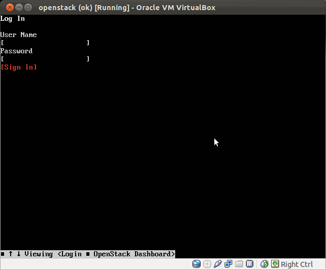
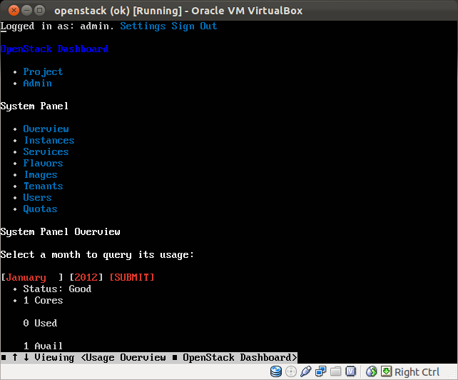
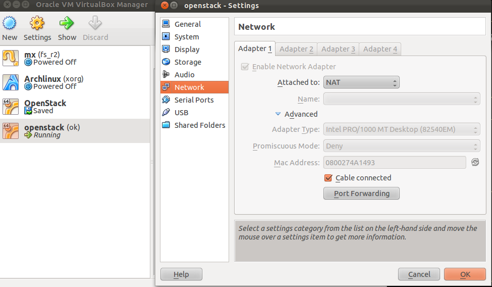
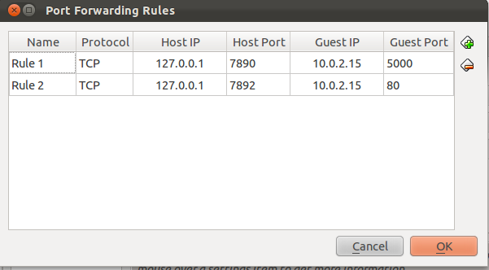
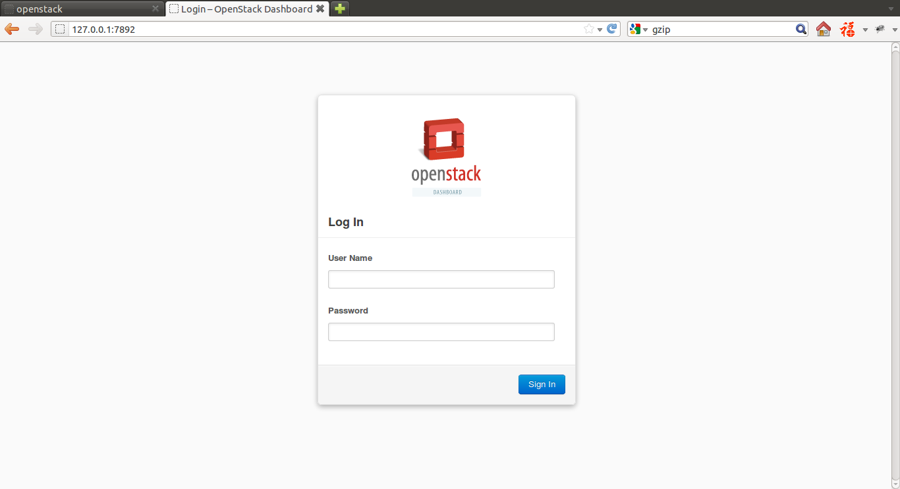
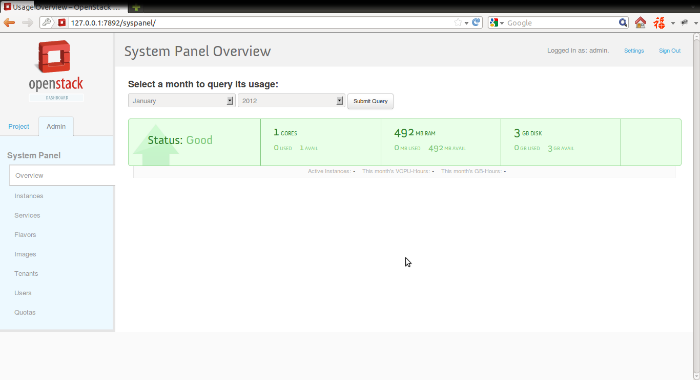

Last Updated: January 11, 2012

通过devstack.org提供的shell脚本来安装和配置openstack。
最稳妥的是安装Ubuntu Server 11.10 64bits。我在Unbuntu Desktop Edition上也试过运行脚本，但是会出现Host Ip没有指定的情况，应该另外配置一下就可以了，但我没有继续研究下去。
下载脚本需要用到git，如果你的系统还没有安装过git，可以在控制台中用下面的命令安装。
sudo apt-get install git
cd到准备存放脚本的文件夹下，然后在控制台执行下面的命令。
git clone git://github.com/cloudbuilders/devstack.git
cd devstack # The folder you just cloned ./stack.sh # run the script
Downloading/Unpacking django-nose-selenium的情况，尝试过修改配置文件，但没有成功，卡住的具体原因不明。pip install django-nose-selenium虽然安装的版本可能和脚本默认的不太一样，不过最后的Dashboard一切正常，那就无所谓了。
安装完成后会提示你各个配置信息,包括默认的用户名和密码。
比如访问Dashboard的地址horizon is now available at http://10.0.2.15/
即使Ubuntu Server默认没有安装桌面环境，一样可以通过控制台中的浏览器访问Dashboard
w3m http://10.0.2.15


如果是在Virtualbox中安装openstack，可以通过NAT和Port Forwarding在原来的系统(Host)内访问虚拟机中系统(Guest)的服务。其原理是将发向Host的某个Ip地址和端口的请求转发给Guest的某个Ip地址和端口，达到在Host上访问Guest的目的，具体设置步骤如下



